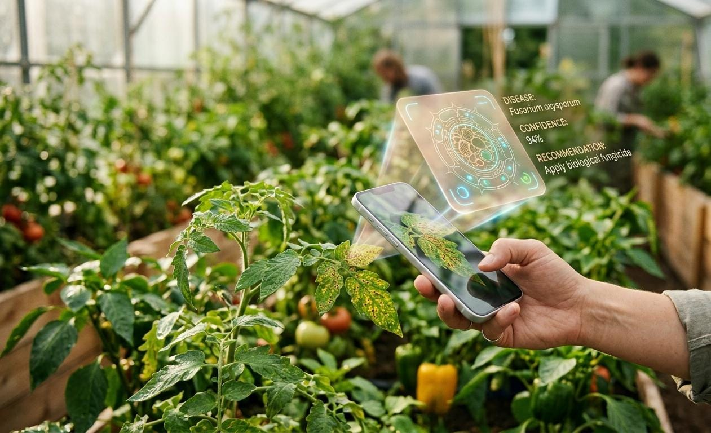
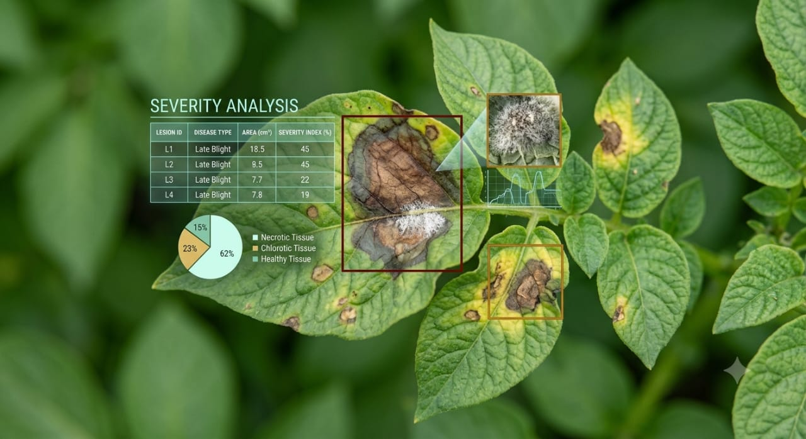
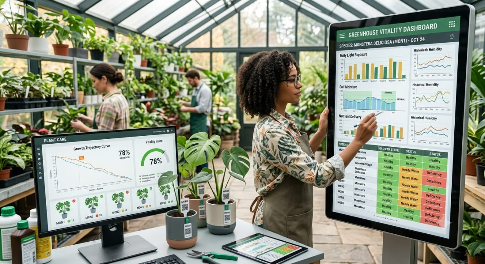

AI PLANT SCANNER
Scan Your Plant Leaf
Upload a clear image of a plant leaf to begin the PlantPulse AI analysis.
Upload Leaf Image
Drag & drop your image here or choose a file.
Supported formats: JPG, JPEG, PNGPlantPulse AI uses Computer Vision and Machine Learning to detect plant diseases, estimate visible severity, explain predictions and track plant health over time.
Detect • Explain • Measure • Track
PlantPulse AI does more than identify a possible plant disease. It provides a complete view of the plant's visible condition.
Upload an image of a plant leaf and PlantPulse AI analyzes it using Computer Vision and Machine Learning.
The system provides the predicted disease, confidence level, visible affected area and severity level.
Explainable AI highlights the regions that influenced the prediction, while scan history helps track changes in plant health over time.
PlantPulse AI combines four important capabilities to provide a deeper understanding of plant health.

Analyze a plant leaf image and identify the most likely disease using a trained machine learning model.

Estimate the visible portion of the leaf affected by disease symptoms and classify the observed severity.
Grad-CAM provides a visual explanation by highlighting image regions that contributed to the model's prediction.

Save previous scan results and observe how the visible condition of a plant changes over time.
Upload a clear image of a plant leaf to begin the PlantPulse AI analysis.
Drag & drop your image here or choose a file.
Supported formats: JPG, JPEG, PNGReview previous scans and observe changes in visible disease severity.
No previous scans available.
Upload a leaf image and discover what your plant may be experiencing.
Start Plant Analysis →